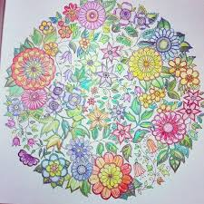
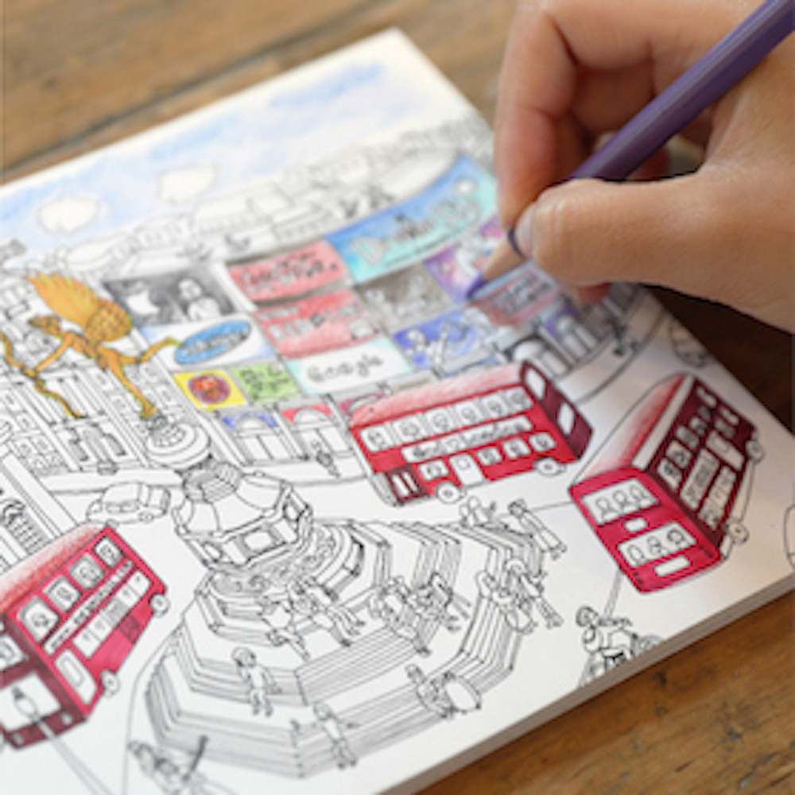
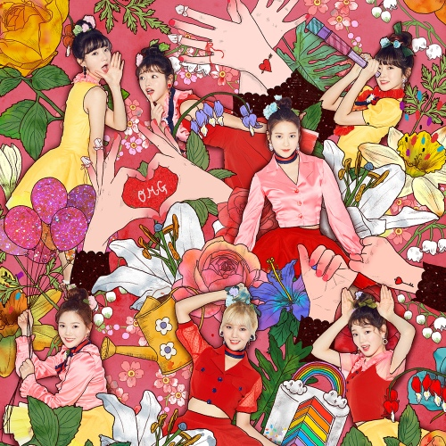

컬러링북
미술 치료는 미술 작품을 만드는 과정을 통해 감정을 탐험하고 정서적 갈등을 조정하며, 자기 인식을 촉진하고 행동과 중독 문제들을 통제하며, 사회적 기술을 개발하고, 현실 감각을 키우는 동시에 불안감을 감소시키고 자존감을 증진하는 정신 건강 치료의 한 방법이라고 합니다. 따라서 기존의 정신 치료와 매우 비슷한 역할을 합니다. 하지만 미술 치료는 단순히 스스로에 대해 배우고 자가발전을 시키는 것을 넘어서 자기 자신을 표현하는 수단이기도 합니다.


